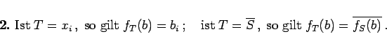

Inhalt Index DeskTop Bronstein

 Algebra und Diskrete Mathematik Boolesche Algebren und Schaltalgebra Boolesche Funktionen, Boolesche Ausdrücke
Algebra und Diskrete Mathematik Boolesche Algebren und Schaltalgebra Boolesche Funktionen, Boolesche Ausdrücke


BOOLEsche Ausdrücke werden induktiv definiert: Sei eine (abzählbare) Menge BOOLEscher Variabler (die nur Werte aus { 0,1} annehmen können):
| (5.333) |
| (5.334) |
Enthält ein BOOLEscher Ausdruck die Variablen so repräsentiert er eine n-stellige BOOLEsche Funktion fT: Es sei b eine ,,Belegung`` der BOOLEschen Variablen d.h. Unter Beachtung der induktiven Definition werden den Ausdrücken T wie folgt BOOLEsche Funktionen zugeordnet:
| (5.335a) |
|  | (5.335b) |
| (5.335c) |
| (5.335d) |
Umgekehrt läßt sich jede BOOLEsche Funktion f durch einen BOOLEschen Ausdruck T darstellen (s. Normalformen).